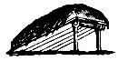

The Old-Time Farm Magazines
Here is more of the old-timey information taken from issues of Successful Farming and The Farm Journal dated 1898 to 1908.
By the Mother Earth News editors
July/August 1973
Here are two more pages of old-timey information taken from issues of SUCCESSFUL FARMING and THE FARM JOURNAL dated 1898 to 1908.
Trap Nests.
The trap nest will show what hens lay and which hens lay certain eggs, thus enabling the breeder to know just what he is doing. Trap nests require some attention in the way of keeping records and releasing hens but if in the business for profit it will pay to try these nests. The cut herewith shown gives a practical plan for a trap nest recommended by the Ontario Agricultural college. Note that the door is so adjusted that the hen upon entering brushes against it slightly, and thus raising it, allows the hook (C) to drop back, releasing the door Nest is 12 inches tide. 12 inches high, and 15 inches long. The door (A) is made, of very light material, so that it will be pushed upward as the hen enters the nest. To set the nest, the door is raised and the hook caught slightly under one of the slats. See illustration.
The cut shows another trap nest almost as east- to make is a common nest. taking tilt not. a whit more room. In fact. it is the common nest, with either a circular or square opening in front, but with a front of very thin, light stuff pivoted over the top as shown. A wire runs front one side across the opening, when the nest is "set" the outer end of the wire resting against a bit of tin, or other smooth metal, Projecting, out from the board. To enter the nest the hen ptresses in under the wire, lifts up the loose end, when the thin front slips down into place behind her, shutting her into the dark nest.
Starting a Small Vineyard.
In the famous "Chautauqua Grape Belt" there the grape is grown in as near perfect condition as in any part of the country, we have found the leading varieties to be the Moore s Early, Worden and Campbell's Early that ripen early; the Concord, Moore's Diamond, and Niagara that ripen about the middle of September, and the Late Catawba that ripens during October and is kept for winter table use.
To prepare the ground for a vineyard, plow late in the fall into strips nine feet wide, harrow, then plow again early in the spring and leave the dead furrow about seven inches deep, this furrow serves for the row and the vines are act nine feet apart in the row, thus forming squares nine feet each way.
Set a small stake by the side of each vine to mark the place and to prevent the horse from walking on the row while cultivating. After being set in the furrow the ground should be worked to the row until the ridge along the row is two or three inches higher than the center of the row, this makes it easy to cultivate toward the center of the row and the ridge can then he removed and the weeds killed, after which the soil should again be worked toward the row to protect the vines from the cold weather and to prevent water standing around the roots during wet weather.
The first two years keep vines pruned to three buds. When three years old put up on posts and wires. Set posts for every two vines and wires put on to hold up vines. The first two or three years after the vines are put on posts and wires, we are in favor of keeping them pruned down to three canes, which are selected from the wood that starts from the stub that is confined to the lower wire and cut long enough to reach the top, or the wire above.
Only wood that was grown the precious year should be put up from the lower wire, for that is the wood that affords fruit for the next season. The sketch will show exactly how we trim our vines and train them on the wires.
Grapes, like all other fruit, need to be kept clean and free from weeds and the soil worked and fertilized to obtain the best results. A dressing of wood ashes, a little bone dust and some potash will prove better adapted to the grape vines than manures that are made on the farm.
If properly cared for, a small vineyard of one-half acre can be made a very profitable and enjoyable addition to the fruit garden of any farm and one that will remain as long as the trees if well handled.-W. Milton Kelly, Erie Co., N. Y.
Making Rain.
There are few places where the rain comes just to suit the needs of the farmer or fruit grower. But whether he lives East or West, North or South, it is in his power to keep his field from drying up.
It has been very thoroughly established that a good cultivation is about equal to a good shower. It makes rain come up from below instead of down from above. It helps to save that is already in the ground. That is how men have done such wonders with the supposedly barren expanse where dry farming is now being practiced with good results.
No matter whether there are weeds present or not, a shallow cultivation is often very much needed for the purpose of saving moisture. It is doubtful if a field was over cultivated too much-if done properly. It is sure that most fields are cultivated too little.
Wind Power.
There's a lot of power going to waste every where. The air is full of it. Some use it for pumping, but that is not all the windmill is good for. Geared mil have great mechanical power and can grind grain, turn machinery, etc.
After you have the wind engine installed, it costs nothing but oil for its working parts. True, it does not alwyas go when you want it, but that can be helped by using a little ingenuity. A storage tank will keep the stock supplied with water when the mill is idle.
When used for grinding grain the grinder can have a self feed supply so tit when the wind blows day or night the grinder works. In this way quite a quantity of grain can be ground in a year. More than one would suppose. Geared mills are powerful. They are not slow either.
There are many kinds of wood and steel mills now on the market. Stuff up on them before buying. Write for catalogues and get posted before your old mill blows down, or before you buy first one. Don't simply go to town take the one kind some dealer may keep. Get the kind you want.
Barn Windlass .
In order to some heavy lifting alone and place sacks of grain and other heavy things upon the second floor, I made windlass out of water pipe shown in illustration. It is fastened the posts with iron lugs shown in A. To keep from unwinding, I put a loose bolt in a hole in post and lot the crank come against it. A hook is made on the pipe to catch end of rope. I use a pulley above so as to get advantage of double rope pull. - E.S. Kelly, Ohio.
A single broom does not sweep wide enough a swath in the big barn floor, but two old brooms, put together as shown in the cut, make quick work. Two old brooms with broken handles thus can be utilized, making a handle for the combination out of a broken shovel or fork whose handle is intact.
Chicken Trough.
It is desirable that a feeding trough for poultry can be so made that they cannot get into it with their feet. The cut shows how an ordinary V trough can be made so as to exclude the bodily presence of the hen by nailing a board to one edge of the trough and slanting it over the trough as shown. They have plenty of room to eat, but cannot get in the trough. Mrs. T. H. Haughton N. C.
A Montana friend sends us this cut of a homemade lantern that he says has several times served him in emergencies and helped him to follow safely dark and dangerous ways. It is made out of a cast-off fruit can, and the illuminator is the old-time candle. One end being melted off the tin can, a cross cut is made at A, in the manner indicated at B, and the points are turned inward sufficiently to admit of forcing the candle through the opening, and there is your lantern.
A foundation for farm buildings that does not require the services of a mason is shown in the cut. Loose stones are filled into the trench level with the surface of the ground. Stakes are then driven and boards put up on either side as shown. Into this is filled mortar and small stones to the desired height. When the mor tar has "set" the boards can be taken down and another section of the foundation built. Any kind of stones, both large and small, can be utilized for this work. We will remember this for that Experimental Farm.
The hog born and bred in the expensive, painted house is not always the most healthy and profitable. Sheltered in field and stack, as he is in many parts of the West, he does his best. Two or three posts with crotches and poles stretched across resting in them make a rude structure which, when covered deeply with swale hay, rye straw, or even peat, makes the most comfortable place imaginable, keeping off rain, snow and wind. The back side may rest upon the ground or upon a wall.
|
|
|
|
|
|
|
 |
|
|
|
 |
|
|
|
|
|
|
|
|